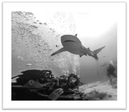
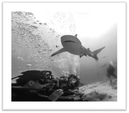

Infographics - Swiss Design Style
Social Media Campaign
Presentation
Advocacy Poster
About Me


 

This infographics was created with Canva. The topic is the Swiss Design Style, also know as International Typographic Style, which is a style I became familiar as a child when my family visited relatives in Germany. Many books I saw there had a very different layout and design of the covers, something I later realized was either Bauhaus or Swiss Design.
The simplicity but at the same time sofistication in this design style has influenced how I design websites and also software UI:s.
Changes made to this version compared with the original submission:
The task was to create a social media campaign for a series of at least three unified posts/images for a non-profit, businees, group or organization. Canva. I picked Toastmaster, an international organization with the goal of teaching people public speaking and leadership throughlocal clubs all ocross the planet.
Changes made to this version, compared with the original submission:
The task was to design and create a presentation of 25 or more pages, with a coherent look, and I created one targeted at Notes and Domino developers who wanted to learn more about Node-RED. I used PowerPoint, as I am already familiar with the software.
Changes made to this version, compared with the original submission:
The task was to design an advocacy poster for a local, regional or national cause. I choose homelessness, a big and visible problem in the part of Dallas where I live.
This poster was created with Adobe Illustrator (instead of Vectr), as I felt more comfortable with the former software.
Changes made to this version compared with the original submission: